工作交接文档移动开发工作华夏基金管家App业务需求开发首页，发现页首页，智投基金搜索资产配置定投通首页定存工资指纹解锁销售适当性技术框架数据库框架页面间通信框架交易明细模板框架华夏活期通App业务需求开发轻理财首页活期通、总资产首页及其二级页面账户设置以及账户设置信息存储结构设计技术框架Tab导航框架Model层框架业务相关工作活期通产品活跃数据分析交易明细优化需求梳理日常提交财务付款流程
主要参与华夏基金管家App以及活期通App的iOS客户端的开发，开发工作大体分为，业务需求开发以及技术框架的设计实现。
发现页，是管家承载运营功能的首页，目前是游客状态下App启动默认展示的首页；发现页是一个支持数据灵活配置的页面；整个页面由顶部固定区域以及多模块动态组合区域构成。顶部固定区域由顶部banner和消息轮播条组成，并且顺序固定。多模块动态组合区域，由专区模块、活期通模块、定投通模块、热门消息模块组成，排列顺序由后台下发的数据顺序决定。
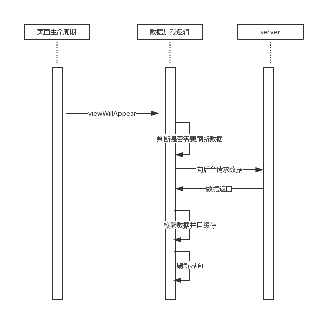
上图，即是发现页面的数据加载的时序图：在页面viewWillAppear的回调中，判断是否需要刷新数据，如果需要刷新数据，则向后台请求数据，后台成功返回后缓存数据并且刷新UI。判断是否需要刷新数据的逻辑流程图如下，
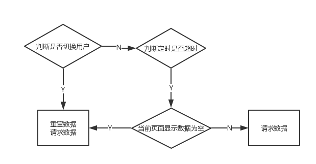
影响页面是否刷新的因素有两个一个是是否切换用户，另一个是是否超时；当发生了切换用的事件，需要重置页面数据（如果处于登录态，则重置为该用户的缓存数据；非登录态，则重置为非登录态的缓存数据）；如果没有发生账户切换，则判断是否超时（目前线上默认十分钟超时），如果超时则刷新数据，反之亦然。
上述，描述了发现页承载的需求以及页面绘制和数据获取的关键逻辑，下面通过UML图介绍发现页相关的关键类。
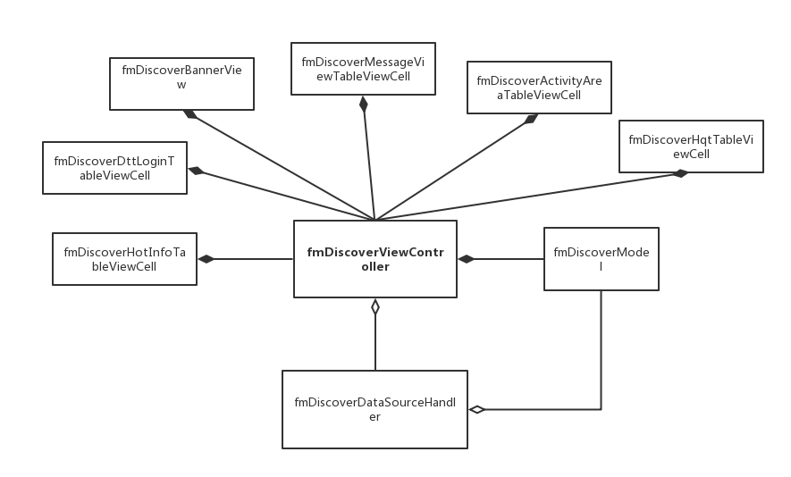
发现页的设计遵循MVC的设计思想。viewcontroller负责UI绘制，事件响应，组织数据逻辑；hanlder将数据获取、数据缓存、缓存数据查询的API封装；Modle单纯的数据Bean类；各种cell，代表着发现页显示的各种UI模板，通过TableView-cell的方式组织UI。
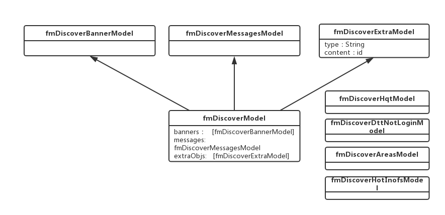
上图，描述了发现页的数据模型，model由banner、message以及extraObjs三部分数据组成，banner和message顾名思义是顶部模块的数据结构；extraModel就是动态组合的模块的数据结构，模块的真是面目有type字段指定（前后端约定的描述模板类型的字符串），前端根据type来将content中的json数据转为对应的model，从而达到灵活配置的目的，模板显示的顺序就是根据extraObjs的顺序指定。
智投首页，即是华夏财富投放在管家App上的h5页面，处于管家第四个根页。智投首页页面，即是一个继承自webViewController的页面，接收url和title两个参数，并且提供外部设置刷新页面的接口。由于cookie同步的问题，智投页面封装了两个基于不同webview的controller，一个基于UIWebView，一个基于WkWebview。
此外，为了使用方便，逻辑统一封装了fmIntelligentInvestHomePicker类，用于对外提供适合当前系统版本的智投首页。
针对cookie的同步策略，再展开描述一下。对于基于UIWebView封装的controller，无需考虑cookie同步的问题，UIWebView会自动的向系统的NSHTTPCookieStorage去同步。但是，对于基于WKWebView封装的controller，情况要复杂一些。对于iOS11以及之上的系统，WKWebview提供WKHTTPCookieStore对象存储cookie；对于iOS11以下的采用注入JS函数，并调用的方式同步cookie。
基金搜索的入口，位于基金首页的导航栏。基金搜索的需求，主要有三部分组成：继承系统UISerachBar自定义了SearchBar，搜索页，搜索结果页。
自定义的SearchBar，替换了默认的leftIcon，并且替换了默认的清空button的样式。
搜索页面fmSearchViewController，展示了搜索历史和热门搜索，搜索历史展示了用户最近搜索记录的前4条，搜索记录存放在sqlite中；热门搜索的数据是后台下发的，并且静默拉取。点击了热门搜索的条目或者点击搜索结果的条目，会更新搜索历史表的记录。
搜索结果页面，是覆盖在viewController的view上面。
数据库表设计
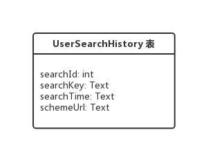
searchId，即唯一标识本条搜索记录的唯一标识，目前采用基金名称作为ID；
searchKey，即搜索关键词，目前存储的基金名称
searchTime，即新增或者更新本条记录的时间
schemeUrl，即后台下发的点击本条记录的事件scheme
基金搜索UML图
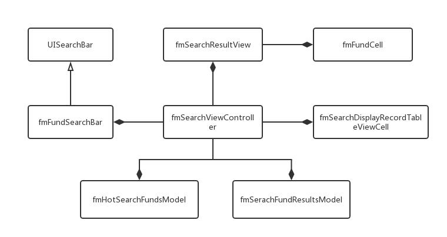
设计上就是遵循MVC的设计规范，具体请参考代码实现，不再赘述。
资产配置的入口是，在资产首页点击header的总资产数字，就会跳转到资产配置页面。
资产配置页面，从上至下由持仓基金类型分布的饼图、持仓明细的列表、持仓收益曲线三部分组成。
页面列表整体是个TableView；头部的饼图采用iOS-chars第三方库编写；尾部的收益曲线是iOS-chars第三方库提供的折线图。
饼图和持仓列表的数据是一起下发的，资产配置页面viewDidLoad回调中请求数据；收益曲线的数据是在第一次滚动到底部收益曲线的cell的时候才请求。
底部曲线数据是支持多个区间的收益曲线的显示，具体支持多少个区间是由后台下发的（目前线上下发的是近一周、近一个月的数据）；故当列表第一次滚动到底部曲线cell的时候，默认先请求第一个区间的数据；此外，为了避免不必要的流量消耗，当点击选择其他区间的时候，才会去请求响应的数据；同时，为了避免重复请求，会在内存中缓存请求过的区间数据。
资产配置功能的UML图如下，
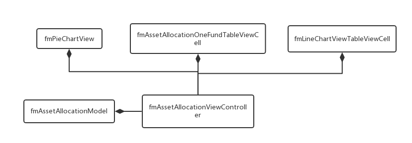
设计上就是遵循MVC的设计规范，具体请参考代码实现，不再赘述。
定投通首页，同时承载定投通宣传页以及定投通记录列表页两个业务功能。
定投通首页的交互有一点儿复杂，通过下面一系列的流程图来描述，
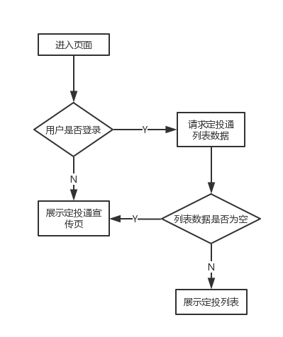
上图描述的是，首次进入页面的逻辑，根据登录状态以及获取数据的列表是否为为空，来决定展示定投通宣传页或者是定投通列表页面。
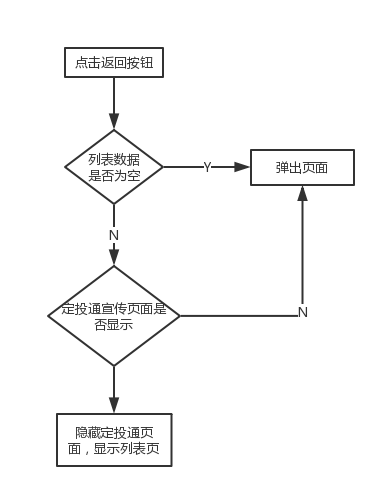
上图描述了，点击返回按钮的交互逻辑。
定投通首页UML图，如下
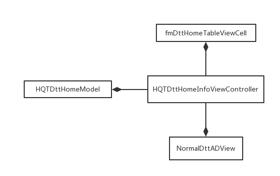
设计上就是遵循MVC的设计规范，具体请参考代码实现，不再赘述。
定存工资，即目标为活期通的定期定额申购业务的包装业务。定存工资的下单免密码。定存的金额和周期的选择与header的内容显示的联动的。如果用户没有做过定存工资（后台下发字段决定），则在页面显示后，弹出业务宣传的弹窗。
定存工资没有什么复杂的逻辑，不过由于是老旧版本的代码，有一些实现的问题，比如view布局都是采用frame的方式，没有采用autoLayout的方式，有许多magic Code；cell采用的在cellforrow：绘制的方式，性能较差，应考虑采用自定义cell的方式优化。
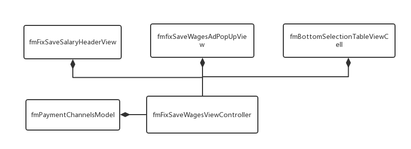
上图就是定存工资的UML图，设计上就是遵循MVC的设计规范，具体请参考代码实现，不再赘述。
封装了指纹解锁功能相关的fmFingerprintHandler ，提供指纹解锁是否可用，当前用户是否开启指纹解锁，开启/关闭指纹解锁的API。管家的用户信息通过字典的形式的数据结构，存储于沙箱之中，某个用户的是否开启了指纹解锁以字符串“yes”/“no”的形式，以“ifusefingerprint ”为key进行索引。判断指纹解锁是否可用的逻辑有些复杂，通过流程图描述如下，
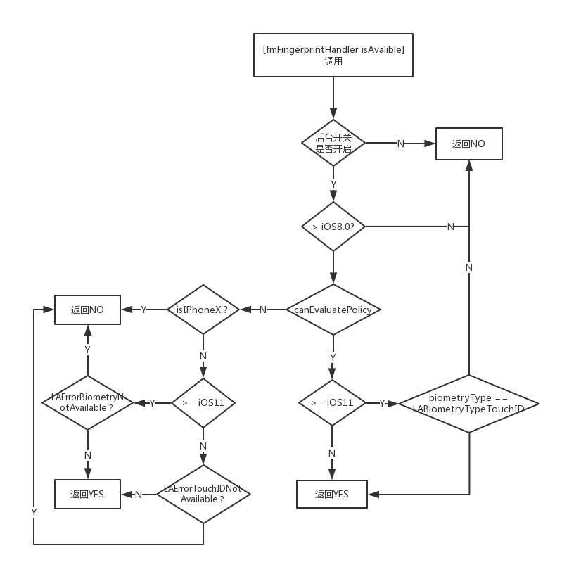
上图描述了判断解锁是否可用的逻辑，由于需要综合考虑后天开关、系统版本更迭中API的变化的问题，所以较为复杂。
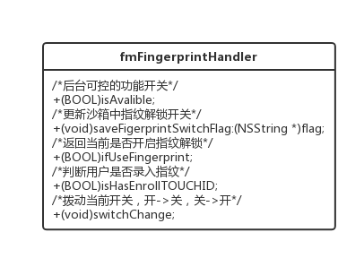
上图的handler的类图，以及接口设计。
销售适当性的需求主要包括三部分：
购买时的风险匹配提示弹窗、特高风险提示弹窗
这两个弹窗是在新增定投通、转换、定期定额申购、认购、申购、定期定额转换页面，提交校验演接口后，根据后台返回的字段（riskControl，highRiskControl）来决定是否弹出弹窗，判断逻辑，如下面流程图的描述，
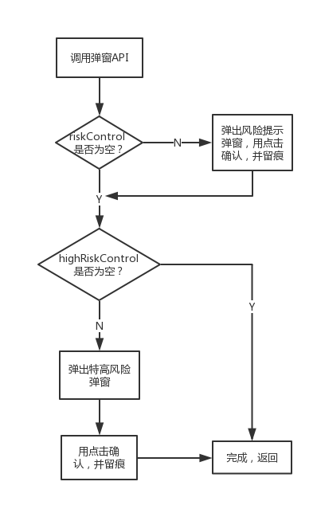
上述弹窗逻辑，代码实现上为了独立性考虑，将弹窗的API，封装fmTwiceConfirmHandler暴露统一的API接口，传入用于判断是否弹弹窗的字符串，以及用户点击确认的弹窗回调，用户留痕逻辑；以及流程结束后的complication回调，用于进入交易确认页面的逻辑。接口设计图如下，
+ (void)showUpWithFirstConfirmContent:(NSString *)firstConfirmContent secondConfirmContent:(NSString *)secondConfirmContent firstConfirmCallBack:(TCFirstConfirmBlock)firstConfirmBlock secondConfirmCallBack:(TCSecondConfirmBlock)secondConfirmBlock completion:(TCCompletion)completion;
密码弹窗的二次提示
即在交易确认页面，点击确认弹出密码弹窗的时候，根据上一个页面传递的风险弹窗的数据的情况，在密码的弹窗的文字部分展示不同的提示的文案；如果在上一个页面显示过风险提示弹窗，则要在密码弹窗进行二次提示。
为实现这个需求而且考虑独立性，在fmTradeHandler 中增加了一个API，
xxxxxxxxxx+ (void)showUpPasswordDialogWithModel:(fmTwiceConfirmResultModel *)model mark:(THPasswordDialogMarkBlock)mark confirm:(THConfirmBlock)confirm cancel:(THCancleBlock)cancle;
用于根据传入的风险弹窗的数据弹出不同内容的密码弹窗，并且通过block的方式完成上下文的衔接。
上述流程中的操作留痕
留痕的参数数据结构采用字点的方式，key是先后端约定的号的字符串，用于描述留痕的场景，字符串结构为，“交易类型_交互场景类型_类型描述"，例如"sg_d_riskControl "是指申购分析按提示弹窗的确认事件；”yyqx_p_yyshywxy “是指同意了预约取现业务协议；"cr_st"是是指同意了存入特别提示；value是约定好的格式：留痕时间戳|基金代码|描述（不同的key有不同前端写死的文案）。
留痕相关的类有两个：fmSalesMarkHandler 、fmSaleMarkContentGenerator 。
fmSalesMarkHandler提供了即时留痕、字段转json串的接口，
xxxxxxxxxx// 发起某种留痕请求+ (void)addSalesMarkOfType:(NSString *)type value:(NSString *)value;// 对给定字典生成一个 json 字符串+ (NSString *)jsonStringFromDictionary:(NSDictionary *)dictionary;fmSaleMarkContentGenerator提供了根据根据传入参数（留痕key，基金代码等）生成留痕的value的接口,
xxxxxxxxxx+ (NSString *)generateWithTimeStamp:(NSString *)timeStamp fundCode:(NSString *)fundCode desc:(NSString *)desc;+ (NSString *)generateForRiskControlMarkWithFunCode:(NSString *)fundCode;+ (NSString *)generateForHighRiskControlMarkWithFunCode:(NSString *)fundCode answers:(NSString *)answers;留痕操作有两种方式：
目前管家App中，营销弹窗历史和基金搜索历史的都是依靠数据库进行存储，然而在版本更迭中数据库涉及到很多问题，例如数据库的创建、库表的创建、数据库版本维护、数据库版本升级，故此封装了数据库基类，将以上涉及的问题的解决方式固化，围绕版本固化创建和更新的时机，将创建和更新的细节留给子类去实现，并且将创建和更新的API接口化，强制子类必须实现。数据库基类HXSqliteHelper的数据库API是基于FMDB三方库，提供
-(FMDatabaseQueue *)getDataBase;，获取数据库对象的方法，并且使用懒加载的方式，在第一次获取数据库对象的时候执行创建/更新的流程，具体逻辑，如下，
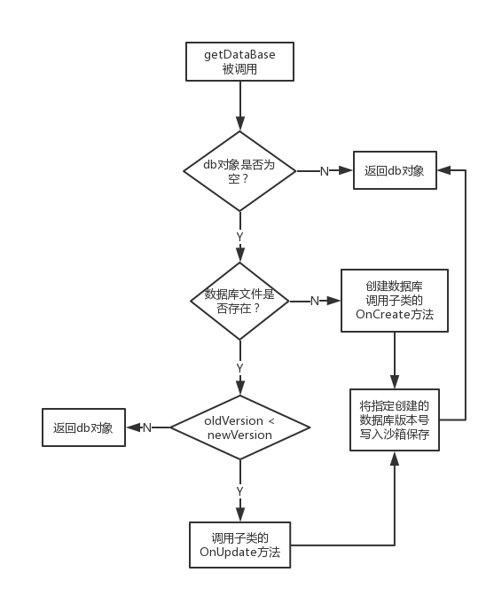
页面通信框架fmMessagePool 是为了解决程序内跨页面传递消息或指令问题的轻量级框架。遵循面向接口编程的原则，将Message按照接口-骨架的层级进行设计，便于封装和泛化。程序中维护一个常驻内存的单例Pool，完成消息的存入和取出。Pool采用字典的数据结构，通过Message中约定的Key进行索引，能够保证消息的唯一性。代码逻辑上很简单，就是提供了一个内部字典的存取，删除的方法，不再赘述。
采用工厂模式作为框架，将接口和实现分离；将详情页面模板化，分离了交易详情列表页和详情页；将操作与调用抽离，利用API工厂降低耦合性，提高扩展性。具体的UML如下，
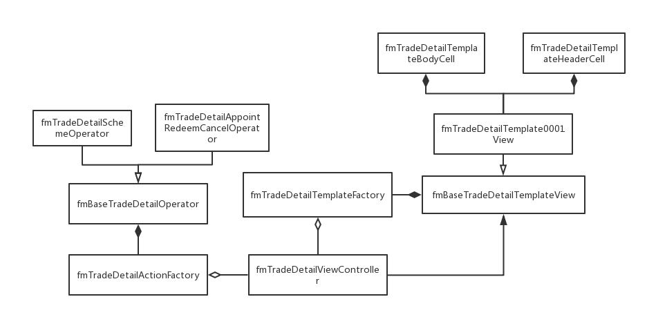
fmTradeDetailTemplateFactory是提供详情页面模板View的工厂类，根据后台下发的模板编号（e.g. tr0001）创建templateView的对象返回；fmTradeDetailActionFactory是提供Action处理对象的处理详情页面产生的所有事件；fmTradeDetailViewController负责根据传入的明细编号和交易类型，向后台请求数据，并通过fmTradeDetailTemplateFactory获取View，并进行布局；同时负责响应View产生的事件，通过fmTradeDetailActionFactory获取正确处理事件的Operator去处理。目前线上支持tr0001模板，模板样式从上至下分为Header、body、footer，并按照这种样式进行数据解析和数据的填充。
轻理财首页是活期通主要承载营销功能的页面，这个页面有顶部模块，广告图模块、热门推荐（轮播banner）模块、活动事件模块；该页面的页面刷新逻辑，请参考上文中管家发现页的数据刷新逻辑。由于该页面模块构成的特殊性， 采用可复用的scrollView实现滑动列表，该控件的具体实现细节会在后面“技术框架”的章节详细描述。轻理财页面的实现类图如下，
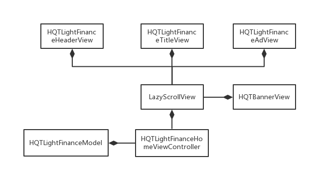
上图即是轻理财页面的类图。LazyScorllView就是封装的可复用的ScrollView具体实现细节会在后面详述。设计上就是遵循MVC的设计规范，具体请参考代码实现，不再赘述。
活期通、总资产首页
“活期通”Tab页是由Tab首页（HQTHomeViewController ）、活期通资产页（HQTHomeHqtViewController ）以及总资产页（HQTHomeTotalAssetViewController ）三个独立的viewController构成，活期通资产页以及总资产页两个页面可以通过滑动或者点击顶部的SegmentControl控件进行切换；滑动列表效果是通过CollectionView实现，cell分别是活期通资产页、总资产页的view。
此外，当处于未登录，Tab首页会显示未登录的页面。故，Tab首页的职责是：处理是否显示未登录页面的逻辑、组装CollectionView，响应顶部SegmentControl的事件来切换页面，资产首页的逻辑则交由其controller自行处理；活期通资产页以及总资产页的数据刷新的时机和规则，与管家App中发现页的逻辑基本一致，但是资产首页无需缓存数据，当需要重置数据的时候，只需将目前显示的内容清空即可；此外为了响应交易对资产更改，首页开放了+(void)forceRefresh;的API，设置强制刷新的标志位为true，当首页viewWilAppear的时候就会判断标志位的真假来进行刷新，具体数据刷新流程如下，
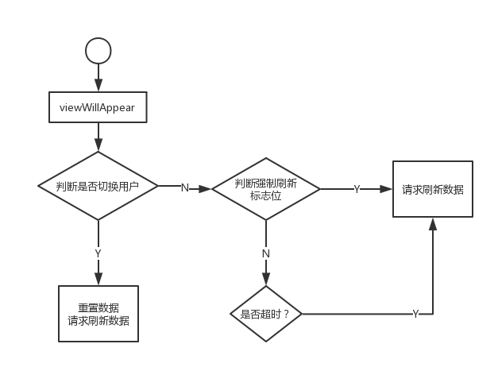
首页的UML类图，如下，
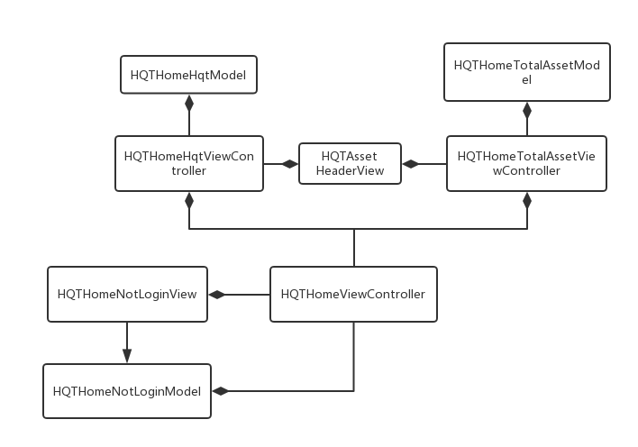
UML图如上图所示，其中活期通资产页（HQTHomeHqtViewController ）以及总资产页（HQTHomeTotalAssetViewController ）的Header是复用的能够根据传入的数据计算高度并且绘制网格区域。设计上就是遵循MVC的设计规范，具体请参考代码实现，不再赘述。
各种二级页面
包括，
活期通余额页面（HQTHqtBalanceViewController ）
盈亏明细页面（HQTFundProfitDetailViewController ）
基金历史收益明细（HQTNetWorthDetailViewController ）
单支基金持仓页面（HQTOneFundDetailViewController ）
每个页面的UI和逻辑都很单纯。大多都是详情和明细页面，主要都是tableView构成的简单的列表页，下面只描述一些需要注意的逻辑，
盈亏明细（HQTFundProfitDetailViewController ）页面可以传入指定某一只基金的盈亏明细的参数，如果没有传入则默认是全部产品的累计盈亏；
基金历史收益页面（HQTNetWorthDetailViewController ），目前仅支持展示活期通的历史收益，基金code和基金名称都是写死的，后续迭代扩展的时候请注意；此外，为了用户体验活期通的历史收益数据都是通过数据库表进行缓存的，每次请求数据都是先加载缓存；
单只基金持仓页面（HQTOneFundDetailViewController ），页面的header也是复用自资产首页的header，header中隐藏资产的操作是将状态写入数据库的，首页每次appear的时候也会根据数据的状态刷新的。
账户设计页面点击头像就可以进入，包括一些系列账户状态相关的设置页面，例如账户信息、登录设置、修改交易密码、给个好评、关于页面、头像设置以及切换账户。设计页面很多，全部都位于/Module/AccountConfig grouop下面，设计上就是遵循MVC的设计规范，具体请参考代码实现，不再赘述。
活期通账户设置信息的存储结构，吸取了管家的经验教训，采用数据库作为存储介质并且重新设计。账户相关的库表主要包括accountInfo和accountConfig两个表，具体的ER图如下，
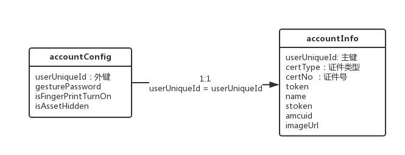
accountInfo是账户信息的主表，描述了用户相关的信息，以userUniqueuId作为主键，userUniqueuId是由前端生成的，规则是MD5Hash后的“证件类型+证件号”字符串；accountConfig是用户的配置表，userUniqueuId作为主键，同时作为外键指向accountInfo的主键，并且标识为删除级联，即主表accountInfo中记录删除后也会删除在accountConfig中相同userUniqueuId的记录；同时，还建立了触发器on_insert_accountInfo，当插入新数据到主表accountInfo的时候，会插入一条相同主键，其余配置数据为默认值的记录到accountConfig表中，保证数据的完成性。建表sql语句如下，
xCREATE TABLE accountInfo ( userUniqueId text PRIMARY KEY NOT NULL, certType text, cerNo text, token text, name text, amcuid text, stoken text, portraitImageUrl text, lastLoginTime text);CREATE TRIGGER on_insert_accountInfo AFTER INSERT ON accountInfo BEGIN INSERT INTO accountConfig (userUniqueId , gesturePassword, isFingerPrintTurnOn, isAssetHidden) VALUES (new.userUniqueId, '', '0','0');END;CREATE TABLE accountConfig ( userUniqueId text, gesturePassword text, isFingerPrintTurnOn text, isAssetHidden text, FOREIGN KEY (userUniqueId) REFERENCES accountInfo (userUniqueId) ON DELETE CASCADE);上面描述了账户相关的库表的设计，即数据层的设计。在接口层，首先，将两张表的数据模型合一，整合了一个统一的对外提供数据的model—HQTUserAccountModel ，然后封装了HQTCurrentUserAccountManager 对外提供账户相关存取的API，例如更新当前账户的API，获取当前以及最近登录用户的各种配置信息的API，登出操作的数据相关操作的API。HQTCurrentUserAccountManager，在内存中缓存了当前登录账户（currentUser ）以及最近登录账户（latestUser ）的model数据，以提高数据获取的效率，省去不必要的查询操作；更新当前账户是唯一设置currentUser的方法；如果latestUser不为空，latestUser与currentUse相同，若currentUse为空，latestUser则从数据库中按照登录时间倒排获取。账户对外接口层的设计，如下面UML，
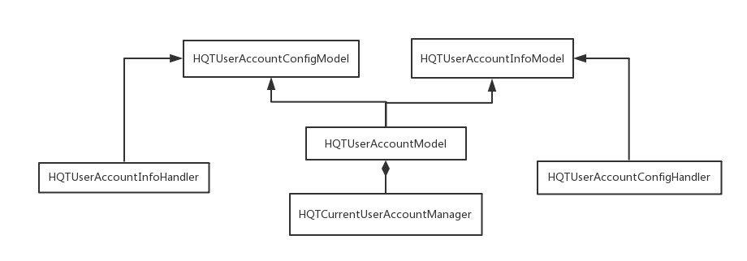
HQTUserAccountInfoHandler和HQTUserAccountConfigHandler 封装了两个数据库表的增、删、改、查操作API的Handler。
活期通App中的中间的TabBar是凸起的，所以继承UITabBarController 自定义实现了HQTTabBarViewController，并且自定义HQTCustomTabBarView，作为tabBar的子view，需要注意的每次UITabBarController ，每次appear的时候，都对默认构造UITabBarButton控件，添加到Tabbar上，故此HQTTabBarViewController实现UINavigationControllerDelegate的代理方法，将tabbar除了HQTCustomTabBarView类型以外的所有子View都remove掉。
活期通App的Model层设计，参考了MVVM中ViewModel的部分思想，封装了HQTBaseModel 和HQTBaseActionModel ，主要目的是将联网操作封装起来，将联网成功之后的操作流程（数据解析、清晰、校验），联网失败的操作（错误处理）固化在base层的API中，具体操作的细节通过协议的方式由子类实现。HQTBaseModel和HQTBaseActionModel的区别是，HQTBaseActionModel的联网才做无需对请求返回的数据进行处理，只关心请求的成功失败与否。
同时，针对错误处理，采用工厂模式的方式将特定错误的统一处理封装起来。处理错误的Handler在工厂池中是通过与后台约定的错误码进行索引的。此外，对于某些错误类型不能通过底层通用的处理，需要业务层给出特殊的处理，这对这种需求，子类可以通过实现代理方法，首先通过- (NSArray<NSString *> *)childHandleErrorCodeArray; 给出子类需要自行特殊处理的错误码，并且实现- (HQTError *)handleWithErrorCode 方法来处理错误。
Modle层的UML，如下，
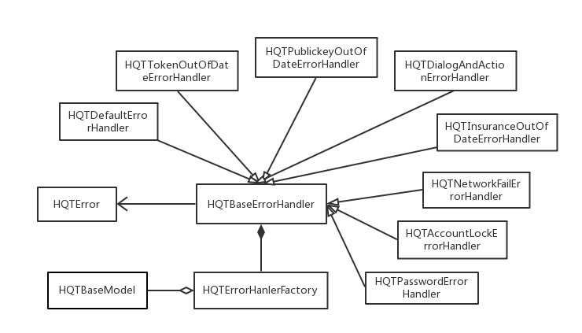
上半年的做的调研报告（数据截止到2018年3月），一直都没有汇报，仅供参考，见目录/需求调研相关文件中的PPT文件。
4.3.0需求池中交易明细优化需求，见目录/需求调研相关文件中的PDF文件。